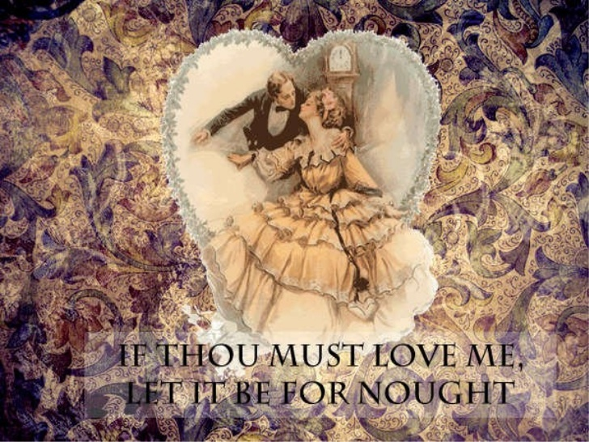
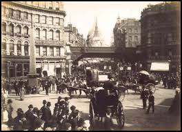
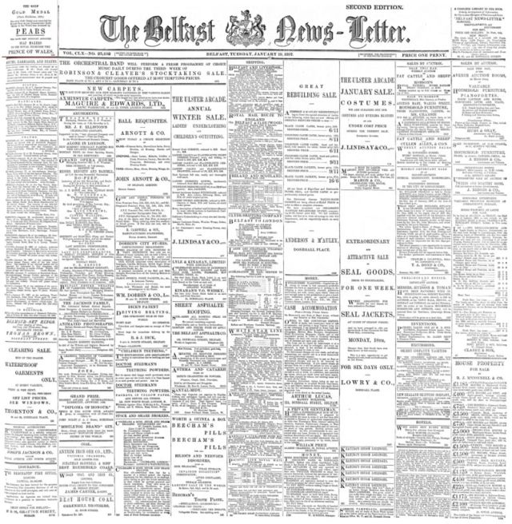

20JUN1837-VICTORIAN ERA-22JAN1901
OLD LOVE STORY COMES ANEW
Despite its title, "Sonnets from the Portuguese" (a sequence of love poems) is not a translation, but a very personal telling of the love story of Elizabeth Barrett and the poet Robert Browning. Elizabeth, who had been living in virtual seclusion with only her spaniel, Flush, as a companion in a home dominated by an iron-willed, classically Victorian father, received a fan letter from Browning which led to their meeting, to their falling in love, and ultimately to their elopement and marriage.

This sonnet sequence by Elizabeth(1806-1861) first appeared in Poems (1850). The title was misleading, as they were not in fact translations from Portuguese originals. This was a deliberate attempt to mask the poems' intimate content: they were composed before her marriage to Robert Browning in 1846, and the suggestion that they were translations allowed her to express her feelings without embarrassment. Barrett Browning (1806-1861) did not originally intend to publish the poems. Even her husband was unaware of their existence until 1849, when he urged her to make them public. 'The Portuguese' also refers to Catarina from a previous poem 'Catarina to Camoens': Camoens (1524-1580) is considered Portugal's greatest poet. Sonnet-writing was associated with male writers, but Barrett Browning's efforts are profoundly moving and impressively inventive.
The poems were very popular during the poet's lifetime, and they remain so today. They are in many ways typically Victorian with their tone of gloom and sorrow, their almost morbid sensitivity to illness and death, their great outpouring of feeling as love develops, and the force and intensity of their passion. Elizabeth had been in frail health since childhood, and she fully expected to live alone until an early death. The lover in the poems, as Robert did in her life, brings about her resurrection from a living death, giving her faith in herself and the courage to live fully in the wide world beyond her father's house.
The poems, because of the universality of the feelings they express and their complex patterns of religious symbolism, carry meaning far beyond the personal story and its Victorian identity. They are deservedly still admired and still read.
CRITICS REVIVES OLD WORKS

Nineteenth-Century Literature Criticism assembles critical responses to the works of 19th-century authors of all sorts—novelists, poets, playwrights, journalists, philosophers, political leaders, scientists, mathematicians and other creative writers from every region of the world.
The series currently covers nearly 600 authors and also includes numerous entries focusing on literary topics and individual works. Students writing papers or class presentations, instructors preparing their syllabi, or anyone seeking a deeper understanding of the 19th century will find this a highly useful resource.
Each of the more than 300 volumes in Nineteenth-Century Literature Criticism profiles approximately three to six novelists, poets, playwrights, journalists, philosophers or other creative and nonfiction writers by providing full-text or excerpted criticism reproduced from books, magazines, literary reviews, newspapers and scholarly journals.
Clear, accessible introductory essays followed by carefully selected critical responses allow end-users to engage with a variety of scholarly views and conversations about authors, works, and literary topics. Introductory essays are written and entries compiled by professional literature researchers and other subject matter experts; many include an author portrait. A full citation and annotation precede each of the approximately 50 essays per volume.
Each volume in this long-standing series profiles approximately four to eight literary figures who died between 1800 and 1899 by providing full-text or excerpted criticism taken from books, magazines, literary reviews, newspapers, and scholarly journals.
THE UNSTAMPED RAGES WAR
In August 1819, more than 60,000 angry Britons gathered in Manchester to demand parliamentary reform. When officials attempted to arrest the ringleaders, as many as 18 unarmed protesters were killed and 500 more injured. Afraid that England was about to spiral into its own version of the French Revolution, politicians swiftly imposed a number of repressive laws—including the Newspaper and Stamp Duties Act.
Four years earlier, the government had raised a tax on newspapers. The new law expanded that tax and effectively gagged the radical press, increasing the cost of most individual newspapers to seven pence—a price most readers could not afford. A related tax on paper forced mainstream newspapers to cram all stories into as few pages as possible, and a drop in circulation forced them to depend more on advertising for funds.
Intellectuals derided this “Tax on Knowledge,” which made British newspapers four times more expensive than US papers. In the 1830s, a number of rebellious publishers began printing and selling cheap untaxed papers to the public. (One penny paper was called The Poor Man’s Guardian.) Nearly 800 people were jailed for participating in this black market.
In 1836, the tax was reduced. The price of papers dropped, readership surged, and by the time the tax was abolished in 1855, the number of papers printed quadrupled to over 120 million a year. Now publishers had a new problem: competition. As cheap papers vied for the eyeballs of new readers and advertisers, the substance of the news changed: Editors increasingly turned to photographs, illustrations, and interviews.
